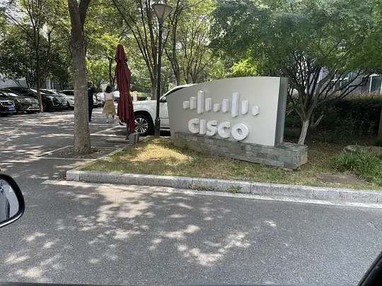
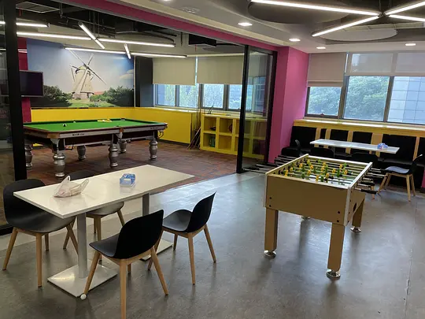
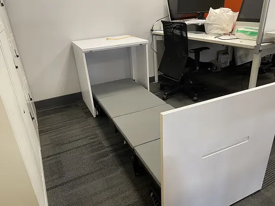
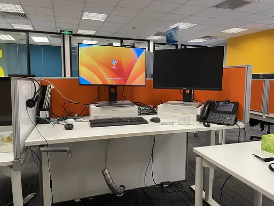
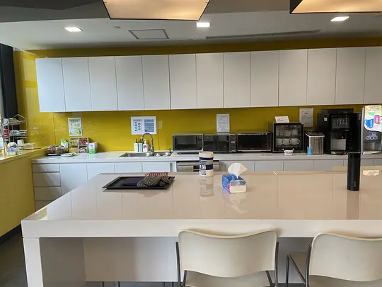

到了要说再见的时候
Posted on Thu 17 August 2023 in Journal
| Abstract | 到了要说再见的时候 |
|---|---|
| Authors | Walter Fan |
| Category | learning note |
| Status | v1.0 |
| Updated | 2023-08-17 |
| License | CC-BY-NC-ND 4.0 |
今天，与小伙伴们一起从思科这所大学毕业了，二十年来，不仅收获了经验和知识，还有珍贵的友情，不仅学会了如何写好设计和代码，还学会了如何更好地做事和做人。
往昔的一幕幕在脑海中浮现，从合肥，苏州到杭州，从圣何塞，旧金山到西雅图...走过了许多路，遇见了许多人，留下了许多美好的回忆，一路见证了 WebEx 的成长与浮沉，总算是欢笑多于唏嘘。
然而天下没有不散的筵席，到了要说再见的时候，感谢大家一路走来的陪伴。今天我们告别过去，重新出发，期待他日有缘，江湖再见，把酒言欢，共叙桑麻。
让这一段经历封存在记忆里吧





本作品采用知识共享署名-非商业性使用-禁止演绎 4.0 国际许可协议进行许可。